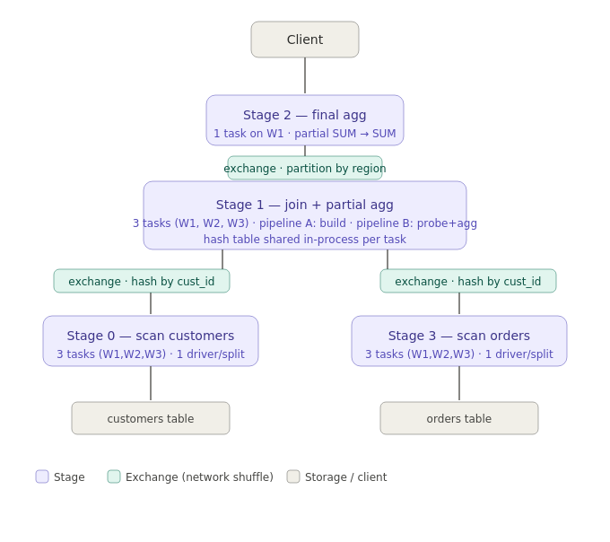
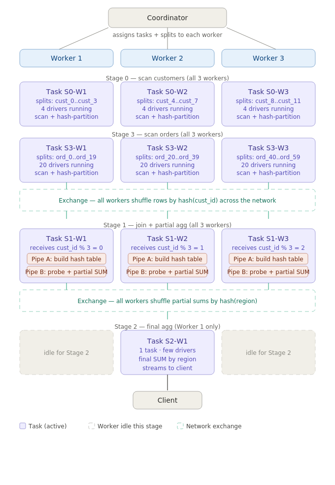

Trino: Distributed SQL Query Engine
A disaggregated MPP SQL engine that federates queries across disparate data sources — object storage, relational databases, key-value stores — without moving data, exposing every source as a typed catalog through a plugin-based connector SPI.
TL;DR
Trino (formerly PrestoSQL, born at Facebook in 2012 as Presto) is an open-source distributed SQL query engine built for interactive, cross-source analytics at petabyte scale. Its core insight: separate compute from storage completely, express every data source as a typed table through a connector plugin, and execute queries as a distributed directed acyclic graph of stages across a coordinator/worker cluster — all over REST/HTTP with no shared disk. In the modern lakehouse stack Trino occupies L4 (query/compute); it reads Iceberg/Delta/Hudi table formats from object storage via L3 catalogs, and serves as the standard SQL surface for BI tools, notebooks, and increasingly for AI agents.
- Coordinator/worker MPP: A single coordinator parses, plans, and schedules; N workers execute tasks and exchange data. All communication is HTTP/HTTPS REST — no dedicated messaging bus. The discovery service runs on the coordinator and workers heartbeat to it.
- Connector SPI is the abstraction: Every data source is a plugin implementing three SPI facets — metadata (schema/stats), data location (splits), and data streaming (pages). Predicate, aggregate, and join pushdown happen per-connector. This is what makes "SQL on Anything" real rather than a marketing claim.
- Query plan → stages → tasks → splits: SQL compiles to a logical plan, then a distributed plan decomposed into pipeline stages. Each stage executes as parallel tasks across workers; tasks consume splits (the physical unit of I/O parallelism). A CBO handles join reordering (up to 9 tables) and join distribution selection; adaptive re-ordering fires at runtime when fault-tolerant execution is enabled.
- Iceberg + IRC is the canonical lakehouse path: The Iceberg connector speaks the Iceberg REST Catalog protocol, resolves table metadata (manifest list → data files), prunes partitions and files using statistics, and — when
vended-credentials-enabled=true— receives short-lived scoped object-storage credentials from the catalog instead of holding long-lived keys. Credential-vending support is functional but still maturing as of 2025–2026. - Security requires TLS everywhere: All authentication modes (OAuth2/OIDC, JWT, LDAP, Kerberos, certificate/mTLS) require TLS on the coordinator HTTPS port. Authorization is enforced via file-based JSON rules, Apache Ranger (column masking, row filtering, audit), or OPA (Rego policies). Workers authenticate to the coordinator via a shared secret over an encrypted channel.
- Not a replacement for high-concurrency OLTP or heavy ETL: Trino is optimized for interactive and batch OLAP. High-concurrency point lookups, sub-millisecond latency, or streaming ingestion are not its design targets — Lakebase/operational stores handle those.
1What it is & core architecture
Trino is a massively parallel processing (MPP) SQL query engine with a strict separation of compute from storage. It does not store data — it reads from external systems through connectors and pipelines the results back to the client. A Trino cluster has exactly one coordinator and one or more workers. Each runs as a single JVM process (Java 17+); a minimal single-node setup collapses both roles into one process.
Coordinator
The coordinator owns the entire control path. It receives SQL from clients (Trino CLI, JDBC, Python/Go clients, ODBC), parses it, builds a logical plan, runs the cost-based optimizer, generates a distributed query plan, and then decomposes that plan into stages. It assigns each stage's tasks to workers by consulting the discovery service for current worker availability. As results accumulate, the coordinator aggregates the final output and returns it to the client. Coordinator state is in-memory; it is a single point of failure in the default configuration (Trino Gateway adds HA routing in front).
Workers and Discovery
Workers execute tasks — the unit of work within a stage. Each task processes a set of splits (logical partitions of a data source: an Iceberg data file range, a Hive partition, a Kafka topic-partition, etc.). Workers pull data from sources via connectors, produce output pages (columnar in-memory buffers), and exchange pages with other workers over HTTP. The discovery service runs on the coordinator; workers register on startup and send periodic heartbeats. A worker that misses heartbeats is removed from scheduling.
Connector SPI
Every data source is a plugin exposing three SPI facets to the coordinator and workers: metadata (list schemas, list tables, column types, table statistics), data location (enumerate splits the coordinator can distribute to workers), and data streaming (workers read and write pages via ConnectorPageSource / ConnectorPageSink). The SPI decouples the core engine from source-specific details entirely. Connectors also declare pushdown capabilities: a connector that implements ConnectorMetadata.applyFilter() will receive the predicate from the planner and can push it to the source, reducing data transfer.
Building a connector: what you implement
The Connector SPI has four moving parts. Three do real work; one wires them together.
Connector — the factory. The entry point Trino instantiates first. It holds shared resources (connection pool, config, HTTP client) constructed once and passed into all three real implementations. It does no work itself — it just returns the other three when Trino asks for them. Think of it as the plug on the cable.
ConnectorMetadata — the Librarian. Answers structural questions before any data moves: what schemas exist, what tables are in each schema, what columns and types does each table have, and optionally what statistics are available (row counts, column cardinalities). Every SHOW TABLES call and every query plan starts here.
ConnectorSplitManager — the Splitter. Breaks a table into independent chunks — splits — that workers can read in parallel. What a split looks like is source-specific: a file path for object storage, a predicate range (WHERE id BETWEEN 0 AND 1M) for JDBC, a topic-partition for Kafka. This is also where predicate pushdown happens — if Trino filters WHERE country = 'US', you inspect the predicate and return only splits containing US data, skipping the rest before a single byte is read.
ConnectorPageSource — the Reader. Workers call it per split to stream actual data as Pages — Trino's columnar in-memory format (batches of rows stored column-by-column, similar to Apache Arrow). You open the connection, execute the query or read the file, and convert results into typed columnar blocks, returning Pages until the split is exhausted.
public class MyConnector implements Connector {
// shared resources constructed once, injected into all three implementations
private final MyConfig config;
private final MyConnectionPool pool;
@Override
public ConnectorMetadata getMetadata(...) { return new MyMetadata(pool); }
@Override
public ConnectorSplitManager getSplitManager() { return new MySplitManager(config); }
@Override
public ConnectorPageSourceProvider getPageSourceProvider() { return new MyPageSourceProvider(pool); }
}containing US data returned CO->>W1: assign split-1, split-2 CO->>W2: assign split-3, split-4 W1->>PS: open(split-1) PS-->>W1: Page {name:[...], ...} PS-->>W1: Page {name:[...], ...} PS-->>W1: null (done) W2->>PS: open(split-3) PS-->>W2: Page {name:[...], ...} PS-->>W2: null (done)
Query execution hierarchy
A SQL statement maps to a query → stages → tasks → splits → operators hierarchy. A stage is a pipeline fragment that can execute in parallel; task parallelism across workers is set by the number of splits the connector generates. Within a task, the engine runs an operator pipeline (TableScan → Filter → Project → HashAggregation, etc.) in a tight loop over columnar pages (the in-memory format). The coordinator's root stage collects final results and streams them back to the client on an output buffer; if the client reads slowly, back-pressure causes the pipeline to block.
Trino is pure compute: no persistent storage, no catalog of its own. Every byte it touches belongs to an external system. The Connector SPI is what makes that work at scale — it's the architectural contract that separates the query engine from the data world.
2Placement in the data platform & AI landscape
Trino occupies Layer 4 (Query/Compute) in the platform stack. It depends on L0–L3 for data and metadata, and it is consumed by L6 (semantic layer compiles metric queries to Trino SQL), L7 (governance catalogs harvest query lineage), and L9 (BI tools, notebooks, and AI agents). It does not implement a table format (L2), does not own a catalog (L3), and has no OLTP capability (L5).
Competes with: Apache Spark (heavier, batch-first; Trino wins on sub-minute interactive latency), Snowflake/BigQuery/Redshift (warehouse, proprietary storage, higher cost/lock-in), DuckDB (single-node, embedded; Trino wins on cluster-scale federation), Presto/PrestoDB (same lineage, different governance). Complements: Spark (Trino for interactive + federation; Spark for heavy batch ML), Flink (streaming ingestion; Trino for query after), dbt (Trino is the execution engine dbt compiles to).
| Axis | Trino | Spark | DuckDB | Snowflake |
|---|---|---|---|---|
| Primary workload | Interactive & federated OLAP | Batch, ML, streaming | Single-node OLAP | Warehouse OLAP |
| Scale model | Horizontal (add workers) | Horizontal (add executors) | Vertical (one process) | Proprietary auto-scale |
| Storage | Open (any connector) | Open (any source) | Local + S3 via extensions | Proprietary (FDN) |
| Latency target | Seconds–minutes | Minutes–hours | Milliseconds–seconds | Seconds–minutes |
| Federation | First-class (multi-catalog join) | Moderate (datasource API) | Limited | External tables only |
| Iceberg native | Yes (Iceberg connector + IRC) | Yes (Iceberg API) | Limited (read-only via extension) | Via external Iceberg |
| OLTP | No | No | No | No |
3How it works
The lifecycle of a query in Trino has four phases: parse & analyze → plan & optimize → schedule & execute → return results. The interesting engineering is in the middle two.
Planning: logical → distributed plan
The coordinator parses SQL into an AST, resolves names against connector metadata (schema, column types, statistics), and builds a logical plan — a tree of relational operators (TableScan, Filter, Project, Join, Aggregation, Sort, etc.). The cost-based optimizer (CBO) then rewrites this plan: it re-orders joins using connector-provided table statistics to minimize estimated cost (Trino defaults to reordering up to 9 tables; factorial search space is bounded). It selects join distribution strategy — broadcast (small table replicated to all workers) or partitioned (both sides hash-partitioned on the join key). Predicate and aggregate pushdown rewrites the plan to move Filter and partial Aggregation operators into connector scan nodes, so connectors can push predicates to the source.
The logical plan is then converted to a distributed plan by inserting explicit ExchangeNode operators that represent cross-worker data movement. An Exchange node creates a stage boundary. Each stage runs as a set of parallel tasks on workers; tasks produce output pages that are pulled by downstream tasks via HTTP.
Execution: splits → pages → results
The scheduler asks connectors for splits — logical data partitions — and assigns them to worker tasks. For the Iceberg connector, a split is typically one Parquet data file (or a range within it). For a JDBC connector, a split may be a predicate range over a numeric key. Workers execute tasks as drivers — pipelines of operators consuming pages. Each operator (TableScan, Filter, HashBuild, HashProbe, etc.) processes one page at a time and emits pages downstream. Pages are the columnar in-memory format; they never touch disk unless spill is configured.
Worker-to-worker data exchange is done via HTTP polling: the downstream task polls the upstream task's output buffer. When the output buffer is full, the upstream task blocks (back-pressure). The coordinator accumulates the final output on its own output buffer and returns it to the client page-by-page.
Fault-tolerant execution (FTE)
By default, any task failure aborts the entire query. With fault-tolerant execution enabled, Trino uses an external ExchangeManager that spills stage outputs to object storage (e.g., S3). If a task fails, only that task is re-run from the spilled input, not the whole query. FTE also enables adaptive plan optimizations — the coordinator can re-order join sides based on actual row counts observed at runtime, not just pre-query statistics.
Iceberg connector mechanics
With the Iceberg connector pointed at an IRC-compliant catalog, the sequence is: (1) coordinator calls GET /v1/namespaces/{ns}/tables/{table} (loadTable) on the catalog; (2) the catalog returns the table metadata location and, if credential vending is enabled, short-lived S3/ADLS/GCS credentials scoped to the table's data paths; (3) the coordinator reads manifest list and manifest files to build the full split list, applying partition and file-level predicates to prune aggressively; (4) workers receive splits and read Parquet pages directly from object storage using the vended credentials. Dynamic filtering further tightens the scan: discovered join-key values are propagated back to the probe-side scan, causing the connector to skip additional files.
As of mid-2025, Trino's Iceberg connector supports iceberg.rest-catalog.vended-credentials-enabled=true, but there are known issues: the client does not always invoke the /credentials refresh endpoint, falling back to re-fetching via oauth/tokens. Spark's Iceberg implementation honors LoadTableResponse vended credentials more reliably. Track GitHub issues #25827 and #27416 before relying on this in production.
IRC catalog — connection string
A catalog is defined by a single properties file dropped into /etc/trino/catalog/. The filename becomes the catalog name in SQL. For an IRC-backed Iceberg catalog:
# /etc/trino/catalog/iceberg.properties
connector.name=iceberg
iceberg.catalog.type=rest
iceberg.rest-catalog.uri=https://catalog.example.com
iceberg.rest-catalog.warehouse=s3://my-bucket/warehouse
iceberg.rest-catalog.security=OAUTH2
iceberg.rest-catalog.oauth2.token=<token>
iceberg.rest-catalog.vended-credentials-enabled=trueTrino calls the IRC server only for metadata (loadTable, listNamespaces). Data never flows through the catalog — workers read Parquet directly from S3 using vended credentials.
JDBC connector mechanics
With a JDBC connector, Trino's role is fundamentally different: the database is compute, storage, and format all in one. The coordinator calls the connector's metadata SPI to introspect schema and statistics from the RDBMS's information_schema. At execution time, the JDBC connector generates a SQL fragment in the target dialect, pushes predicates and — where supported — aggregations and joins down into the database, and opens a JDBC result-set stream. Workers pull rows over that stream and convert them into Trino pages for any remaining computation (cross-catalog joins, aggregations that couldn't be pushed). There is no object storage, no manifest file, no credential vending — the RDBMS is the single control point for both data and security.
# /etc/trino/catalog/postgres.properties
connector.name=postgresql
connection-url=jdbc:postgresql://db-host:5432/mydb
connection-user=trino
connection-password=secretCatalog type comparison: IRC vs JDBC
Both catalog types appear identical to the SQL writer — the difference is entirely in what happens underneath:
-- IRC catalog: data is Parquet on S3, Trino workers do the scan
SELECT * FROM iceberg.sales.orders;
-- JDBC catalog: data is in Postgres, RDBMS does the scan
SELECT * FROM postgres.public.users;
-- Cross-catalog join: Trino federates both transparently
SELECT u.name, o.total
FROM postgres.public.users u
JOIN iceberg.sales.orders o ON u.id = o.user_id;| Dimension | IRC Catalog (Iceberg) | JDBC Catalog (RDBMS) |
|---|---|---|
| Connection string | iceberg.rest-catalog.uri=https://… | jdbc:postgresql://host:5432/db |
| Where data lives | Files in object storage (S3 / GCS / ADLS) | Inside the RDBMS engine |
| Who does the scan | Trino workers read files directly from S3 | RDBMS executes scan; Trino streams results |
| Trino's role | Full compute engine | Thin client + post-processing layer |
| Metadata source | IRC server (Polaris, Nessie, Unity…) | RDBMS information_schema via JDBC |
| Security control point | IRC catalog (credential vending, RBAC) | RDBMS (connection credentials, DB roles) |
Worked example: join + aggregation
To make the stage / task / driver model concrete, consider a join with a partial + final aggregation:
SELECT c.region, SUM(o.total)
FROM orders o
JOIN customers c ON o.cust_id = c.id
GROUP BY c.region;Trino compiles this into four stages connected by three network exchanges. The stage DAG shows the logical decomposition; the physical layout shows how those stages map onto three workers.

hash(cust_id) into Stage 1, which builds the hash table and computes a partial SUM. Stage 1 then shuffles by hash(region) into Stage 2 for the final aggregation, which streams results to the client.Walking through each stage:
- Stage 0 — scan customers: 3 tasks (one per worker), each processing a subset of customer file splits — ~4 drivers per task. Each driver scans Parquet pages and hash-partitions rows by
cust_idinto the exchange output buffer. - Stage 3 — scan orders: 3 tasks in parallel. Orders is much larger — 20 splits per worker, so 20 concurrent drivers per task. Each driver scans and hash-partitions by
cust_id. - First exchange — shuffle by
hash(cust_id): for any givencust_id, both the matching customer row and all matching order rows land on the same worker. This is a partitioned join (repartitioned on both sides), not a broadcast join — orders is too large to replicate to all workers. - Stage 1 — join + partial agg: 3 tasks, each running two pipelines. Pipeline A builds the in-memory hash table from the customer-side rows. Pipeline B probes that hash table with order rows and computes a partial
SUM(total)perregion. The hash table is local to each task — no additional shuffle needed between build and probe because both sides already arrived at the same worker via the partitioned exchange. The build pipeline must complete before the probe pipeline begins — a local barrier within the task. - Second exchange — shuffle by
hash(region): partial sums are routed so that all rows for a given region land on the same worker for the final merge. - Stage 2 — final agg: runs on Worker 1 only (output volume is tiny — just one row per region). Merges partial sums into a final
SUMper region and streams rows to the client.

cust_id % 3 partition for Stage 1. Workers 2 and 3 are idle during Stage 2 — the final aggregation runs on Worker 1 alone.Key observations from this example:
- One task per (stage, worker): Worker 2 runs S0-W2, S3-W2, and S1-W2 simultaneously — three tasks, each with its own memory pool and driver set, all sharing the same thread pool.
- Drivers ≠ splits 1:1 globally: Stage 3 has 20 splits per worker → 20 concurrent drivers per task. Stage 2 has no splits — it reads from an exchange buffer — so it just has a few drivers consuming pages from upstream HTTP output buffers.
- Pipelined execution: Stage 1 starts consuming pages from the exchange as soon as Stage 0/3 tasks begin producing them. There is no global barrier waiting for all of Stage 0 to finish before Stage 1 begins — stages are pipelined end-to-end.
- Two pipelines inside one task: Stage 1 is unusual — a single task runs both the hash-build pipeline and the probe+agg pipeline against the same in-memory hash table. This local build-then-probe barrier is the only intentional serialisation point in the query.
- Skew risk: If a small number of
cust_idvalues account for most order rows, the worker assigned that hash bucket will be overloaded. This is the classic join-skew problem — FTE + runtime adaptive re-partitioning can mitigate it, but skew detection is still a manual tuning concern in most deployments.
4Authentication & identity
Trino's security model has two distinct perimeters: client-to-coordinator (user-facing) and coordinator-to-worker / worker-to-worker (internal). Both require TLS to be configured before any non-trivial authentication mode is enabled.
Client-to-coordinator authentication
Trino supports multiple authentication types, configured in config.properties via http-server.authentication.type. They can be stacked (comma-separated) so a single endpoint accepts, say, both JWT and OAuth2:
| Type | Mechanism | When to use |
|---|---|---|
PASSWORD | File-based (bcrypt/PBKDF2 hashes) or LDAP bind | Simple deployments; LDAP for enterprise directory integration |
OAUTH2 | OAuth 2.0 Authorization Code flow or JWT Bearer; OIDC discovery from /.well-known/openid-configuration; token validated via JWKS endpoint or userinfo_endpoint | SSO with an identity provider (Okta, Azure AD, Keycloak, etc.) |
JWT | Bearer JWT signed with RSA/ECDSA key; public key loaded from JWKS URL or local file on coordinator | Machine-to-machine (service accounts, agents) |
KERBEROS | SPNEGO/Kerberos ticket exchange over HTTPS | On-prem Hadoop ecosystem with existing KDC |
CERTIFICATE | Mutual TLS (mTLS); client presents X.509 certificate; coordinator validates against trust store | Workload identity, service mesh (SPIFFE/SVID) |
Internal cluster authentication
Coordinator-to-worker and worker-to-worker communication is secured via a shared secret (internal-communication.shared-secret). Each request carries an HMAC-signed header; workers reject requests without a valid signature. TLS is independently configurable for internal channels and is recommended (encrypt the data-plane exchanges between workers).
Authorization
Once a principal is authenticated, access control is enforced by one of three pluggable authorization backends:
- File-based system access control: JSON rules files on the coordinator define allow/deny at catalog, schema, table, and column level. Simple and audit-friendly, but static — changes require a coordinator config reload. Supports
principal_rulesfor matching authenticated identities to allowed usernames. - Apache Ranger: The Ranger plugin sends authorization requests to a running Ranger Policy Server over REST. Supports column masking (return a masked value for a column), row-level filtering (append a WHERE clause), and audit logging. Ranger policies are managed centrally and apply to multiple engines.
- Open Policy Agent (OPA): The OPA plugin sends a structured JSON input document (query subject, resource, action, environment) to an OPA server at each access decision point. Policies are Rego and can express ABAC rules that combine user attributes with resource metadata — fine-grained and externalized, but adds a latency hop per access check.
Trino also supports catalog-level roles via SQL (CREATE ROLE, GRANT role TO user) where the underlying connector supports it (Iceberg, Hive). These are RBAC at the connector level, separate from the system-level access control.
Every authentication mode except PASSWORD (with process forwarding) requires TLS on the Trino coordinator HTTPS port. Deploying without TLS means credentials traverse the network in plaintext. Additionally, the internal shared secret is only as strong as the network isolation — operators often overlook encrypting the worker-to-worker channel, which carries query data including join keys and partial result sets.
5How it connects to the rest of the stack
Trino's edges in the platform graph are its most architecturally significant feature — the whole point is federation across those edges. Each connection has a specific protocol and carries specific content.
| Component | Connection mechanism | What crosses | Direction |
|---|---|---|---|
| IRC Catalog (L3) Polaris, Unity, Nessie, Glue |
Iceberg REST Catalog API over HTTPS; OAuth2 Bearer token from IdP | Table metadata (snapshot, manifest list, schema), vended short-lived object-storage credentials | Trino → Catalog |
| Object Storage (L0) S3, GCS, ADLS |
Native storage SDK (S3 API, GCS API); credentials either static config or vended by catalog | Parquet/ORC data file pages (read); new data files (write for INSERT/CTAS) | Workers ↔ Storage |
| Iceberg table format (L2) | File I/O via Iceberg Java library embedded in connector; reads metadata tree (catalog pointer → metadata JSON → manifests → data files) | Manifest files, data file statistics used for partition/file pruning | Coordinator reads metadata; Workers read data |
| RDBMS / JDBC sources (L5) | JDBC driver per database; Trino PostgreSQL/MySQL connectors generate pushdown SQL | Query results + predicate-pushed SQL fragment to source; metadata (schema, stats) on catalog resolve | Trino → Source (pulls data) |
| Semantic Layer (L6) dbt, Cube, AtScale |
Semantic layer compiles metric queries to SQL targeted at Trino; connects via JDBC or Trino Python client | Compiled SQL query sent to Trino; result set returned | Semantic layer → Trino |
| Knowledge/Governance Catalog (L7) DataHub, Atlan, Purview |
Lineage harvested via Trino event listener plugin (OpenLineage) or polling the system catalog; policy tags pushed back via Ranger/OPA | Query lineage events (table inputs/outputs, column-level); classification tags for column masking | Trino → Catalog (lineage); Catalog → Trino (policy) |
| Identity Provider (L8) Okta, Azure AD, Keycloak |
OIDC/OAuth2; Trino validates JWT via JWKS endpoint on every request | JWT access tokens (inbound); JWKS public keys (fetched at startup and cached) | IdP → Trino |
| OPA / Ranger (L8) | HTTP POST to OPA server (Rego eval) or Ranger REST API on each access check | Authorization request (subject, resource, action, environment); decision (allow/deny + column masks) | Trino → Policy engine (per query) |
| BI tools / AI agents (L9) | JDBC (Type 4 driver: jdbc:trino://host:port/catalog/schema), ODBC (commercial), HTTP REST (/v1/statement), Python/Go client libraries |
SQL queries inbound; result sets (columnar pages) outbound | Client → Trino |
A single Trino query can join across multiple catalogs in a single SQL statement: SELECT * FROM iceberg_catalog.db.orders JOIN mysql_catalog.app.customers ON …. Trino resolves each side through its respective connector, pulls data to workers, and performs the join in memory. Predicate pushdown reduces transfer from each source independently. This is Trino's unique architectural position — no other lakehouse-native engine does cross-source federation this cleanly at this scale.
Governance integration: lineage and policy enforcement (L7)
Trino sits at the centre of a two-way relationship with governance catalogs (DataHub, Atlan, Purview). The two directions are completely independent in mechanism but together they close the data-governance loop: every query is observed and recorded, and every classification decision is enforced.
Direction 1 — Trino → Governance catalog (lineage harvest)
At query completion, Trino knows exactly which tables were read, which were written, and which columns were projected or filtered. There are two ways to get this information into a governance catalog:
The primary path is the OpenLineage event listener plugin. OpenLineage is an open standard (SPEC + JSON schema) for expressing data lineage — "this query read from table A and B, wrote to table C, touched columns x, y, z." You configure Trino with an OpenLineage-compatible listener JAR; on every queryCompleted event it emits a structured JSON payload to an HTTP endpoint. DataHub, Atlan, Marquez, and most modern governance tools have native OpenLineage ingestors. Lineage is near-real-time and column-level.
The fallback path is polling system.runtime.queries. Trino exposes a built-in system table containing recent query history — SQL text, input tables, output tables, user, timing. A governance tool can poll this table on a schedule as a simpler integration, at the cost of latency and loss of column-level detail.
Direction 2 — Governance catalog → Trino (policy enforcement)
A data steward in DataHub or Purview can tag a column: PII, SENSITIVE, RESTRICTED. That tag is a business-level classification — it means nothing to Trino on its own. The bridge is Ranger or OPA:
The governance catalog syncs its tag-based policies into Ranger (or expresses them as Rego in OPA). Trino's access control plugin calls the policy engine on every query. The policy engine returns a decision: allow, deny, or allow-with-masking. Column masking is the common outcome — the tagged column's value is replaced with a masked expression (e.g. NULL, '****', or a format-preserving token) transparently, before results leave Trino. The analyst sees masked data; the steward's classification is enforced without any change to the query or the underlying table.
Trino has no awareness of business-level tags like PII. It only enforces what Ranger/OPA tells it. The governance catalog is where human judgment lives; Ranger/OPA translates that judgment into an access decision; Trino is the enforcement point. Each layer does one thing.
Lineage harvest flow
(DataHub / Atlan) participant ST as Data Steward U->>TR: SQL query TR->>TR: Execute query
(reads orders, customers) TR->>OL: queryCompleted event OL->>GC: POST /api/v1/lineage
{ inputs: [orders, customers],
outputs: [report],
columnLineage: [...] } GC->>GC: Update lineage graph ST->>GC: Views lineage in UI
Policy enforcement flow
(DataHub / Purview) participant RO as Ranger / OPA participant TR as Trino participant U as Analyst ST->>GC: Tags orders.amount as PII GC->>RO: Sync policy:
mask orders.amount
for role=analyst RO->>RO: Store masking rule U->>TR: SELECT amount FROM orders TR->>RO: Access check:
{ user: analyst,
table: orders,
column: amount } RO-->>TR: ALLOW with mask:
{ amount → '****' } TR-->>U: Returns masked result
The closed governance loop
Next-generation L7: GCP Knowledge Catalog
A semantic index of your entire data estate — tables, columns, relationships, and business meaning — built so AI agents can find the right data and generate accurate queries without hallucinating. Think of it as the enterprise's long-term memory that agents consult before they write a single line of SQL.
Google Cloud Knowledge Catalog (announced April 2026, evolving Dataplex) represents a generational shift in what an L7 catalog does. Traditional governance catalogs — DataHub, Atlan — are built for human data stewards: lineage graphs, classification tags, policy sync. GCP Knowledge Catalog is built for AI agents: its three pillars are aggregation, enrichment, and semantic search, all oriented toward grounding agents with trusted enterprise context rather than governing human analysts.
Traditional catalog (DataHub/Atlan): bidirectional — lineage flows out of Trino, masking rules flow back in via Ranger/OPA. GCP Knowledge Catalog: primarily upstream — it provides context before a query is written, not enforcement after it runs. Policy enforcement back into Trino still requires Ranger or OPA as the bridge.
How GCP Knowledge Catalog relates to Trino
GCP Knowledge Catalog has no direct Trino connector. Its native integrations are Google-first — BigQuery, AlloyDB, Spanner, Cloud SQL. The connection to Trino comes through two paths:
Indirect lineage via partner catalogs. GCP Knowledge Catalog explicitly federates from DataHub, Atlan, and Collibra. If your org already runs Trino → OpenLineage → DataHub, that lineage flows into GCP Knowledge Catalog through DataHub as a metadata source. Trino contributes lineage, just not directly.
The agentic query path (the important one). GCP Knowledge Catalog provides verified SQL patterns, auto-generated business glossaries, and high-precision semantic search so AI agents can find the right tables and generate accurate SQL without hallucinating joins. That SQL has to execute somewhere — if your compute layer is Trino, the Knowledge Catalog sits upstream of every agent-generated query, grounding it before it hits the engine.
Traditional catalog vs Knowledge Catalog — what changes for Trino
What GCP Knowledge Catalog adds that traditional catalogs don't
| Capability | DataHub / Atlan | GCP Knowledge Catalog |
|---|---|---|
| Primary audience | Human data stewards | AI agents |
| Lineage from Trino | Direct (OpenLineage ingestor) | Indirect (via DataHub/Atlan federation) |
| Policy enforcement to Trino | Via Ranger / OPA sync | Via Ranger / OPA (same path) |
| Semantic search | Basic text search | Hybrid BM25 + vector, sub-second, access-aware |
| Agent grounding | Not built-in | Verified SQL patterns, business glossary, guardrails |
| Trino native connector | Yes (OpenLineage listener) | No — Google-first (BigQuery, AlloyDB, Spanner) |
In an agentic stack where AI agents generate SQL that runs on Trino, GCP Knowledge Catalog prevents hallucinated table names and bad joins before the query is written. Ranger/OPA prevents unauthorized access after the query arrives. You need both layers — they are not substitutes for each other.
6Trade-offs, failure modes & when (not) to use it
What Trino does well
- Interactive OLAP at petabyte scale: The MPP architecture, in-memory pipelining, and connector pushdown deliver sub-minute latency on scans that would take hours in a MapReduce system. At Pinterest, Twitter/X, Meta, Lyft, and many others, Trino runs billions of queries per day.
- Genuine federation: Joining a Postgres OLTP table to an Iceberg data lake table in a single SQL query is production-grade, not a demo feature. Predicate pushdown minimizes data transferred from each source.
- Open architecture: No proprietary storage, no vendor lock-in on compute. Any Iceberg-compatible table can be queried without vendor permission. The connector SPI means you can extend it to any data source.
- Cost-based optimizer: The CBO with table statistics from connectors produces good join orders automatically. Adaptive re-ordering at runtime (FTE mode) handles the common case where statistics are stale or unavailable.
- Lakehouse-native: Deep Iceberg integration — partition evolution awareness, hidden partitioning, time travel, metadata exploration, DML (INSERT, UPDATE, DELETE, MERGE) support, materialized views on Iceberg.
Where Trino breaks or struggles
- Single coordinator is a bottleneck and SPOF: The coordinator holds all query state in memory. A large cluster (hundreds of workers) with high concurrency (hundreds of simultaneous queries) can saturate the coordinator's CPU and heap. Trino Gateway provides routing and basic HA, but there is no native coordinator clustering as of 2025.
- High memory per query: Large hash joins, wide aggregations, and cross-joins can allocate many GBs on individual workers. Memory limits (
query.max-memory-per-node,query.max-memory) exist, but queries exceeding them are killed, not spilled by default. Configuring spill-to-disk helps but adds significant latency. - Not for high-concurrency OLTP: Trino is built for analytical queries — it launches entire distributed plans for every query. A point lookup (
SELECT * FROM table WHERE pk = 1) goes through full coordinator planning and task setup, which is several hundred milliseconds minimum. PostgreSQL or Lakebase handles this 1000× better. - Statistics dependency: The CBO is only as good as the statistics connectors provide. Without
ANALYZEon tables (Iceberg/Hive), the planner degrades to heuristics and can pick catastrophically bad join orders on skewed data. - Long-running batch jobs are unstable without FTE: In default mode, any worker failure kills the entire query. A 3-hour batch ETL query that fails at hour 2.9 is fully re-run. FTE (with external exchange manager) fixes this but adds I/O overhead from spilling stages to object storage.
- Catalog vended-credential maturity: The IRC credential-vending path (the preferred security model) has known bugs in Trino's client-side implementation as of 2025. Organizations relying on short-lived credentials must test renewal behavior under load.
- No streaming: Trino's execution model is bounded queries. Real-time or continuous queries belong in Flink or Kafka Streams.
Default mode is all-or-nothing: one task failure = full query restart. FTE checkpoints stage outputs to object storage (S3/GCS) so only the failed task re-runs — a 3-hour job that fails at hour 2.9 loses minutes, not hours. The cost is checkpoint I/O on every stage boundary, which adds measurable overhead to fast queries. Rule of thumb: leave FTE off for sub-minute interactive OLAP; enable it only for long-running batch ETL. See the execution section for the full mechanism.
When (not) to use Trino
| Use case | Fit? | Why |
|---|---|---|
| Interactive ad-hoc analytics on Iceberg / Delta | ✅ Excellent | Native connector, deep pushdown, sub-minute typical latency |
| Federated query across RDBMS + data lake | ✅ Excellent | Core design purpose; no ETL movement required |
| BI tool backend (Tableau, Superset, Metabase) | ✅ Good | JDBC driver, ANSI SQL compliance, resource groups for multi-user QoS |
| ETL/ELT with CREATE TABLE AS SELECT | ✅ Good (with FTE) | Fault-tolerant execution makes long ETL viable; dbt + Trino is a common pattern |
| High-concurrency point lookups (<10ms) | ❌ Wrong tool | Coordinator overhead; use Lakebase/PostgreSQL/Cassandra |
| Streaming / real-time ingestion | ❌ Wrong tool | Batch execution model; use Flink or Kafka Streams |
| Heavy ML training (multi-hour, shuffle-heavy) | ⚠️ Marginal | Spark is better for iterative ML; Trino can do feature extraction |
| Tiny data / single-node analytics | ⚠️ Overkill | DuckDB is simpler and faster for <100 GB on a laptop |
7Architect's take
1. The connector SPI is the real moat, not the query engine. Any competent MPP engine can do parallel SQL. What makes Trino's position durable is the breadth of production-quality connectors and the ecosystem of tools built against its JDBC endpoint. The SPI is a clean interface that lets you add sources without touching the core engine — that design decision from 2012 aged extremely well. When evaluating Trino for your stack, the first question is: "What connectors do I actually need, and are they mature?" Not every connector is at Iceberg/PostgreSQL quality.
2. Trino + Iceberg REST Catalog is the canonical open lakehouse query path. The combination of Iceberg's open table format, an IRC-compliant catalog for credential vending, and Trino as the compute tier gives you a fully open, federated, ACID-capable analytics stack with no proprietary lock-in at any layer. The architecture is sound; the friction points are operational (catalog credential-vending bugs, statistics management, memory tuning). Invest time in getting Iceberg table stats right with ANALYZE — they are the single biggest lever on query performance.
3. The coordinator is the ceiling. For most teams Trino works beautifully up to ~200 concurrent queries and clusters of ~200 workers. Above that, coordinator CPU and GC pressure become real. Trino Gateway (the open-source routing proxy) buys you HA and cluster isolation, but it does not horizontally scale a single coordinator. Follow coordinator sizing recommendations from Starburst (32 vCPUs, 128 GB heap is a common production baseline for large clusters) and monitor query.planning_time_ms closely — sustained >1s planning is a warning sign.
4. Watch the AI agent layer over the next 12–18 months. AI agents querying data platforms through Trino are not hypothetical — several Starburst and Databricks customers are routing LLM-generated SQL through Trino today. The pressure points will be: (a) authorization — an agent should have a bounded, audited set of table permissions, not inherit a human user's full access; (b) query governance — LLM-generated SQL is unpredictable and can generate resource-intensive plans that OOM the cluster; (c) semantic grounding — agents need the semantic layer (dbt Metrics, Cube) in front of Trino to stay consistent. Expect policy-engine integrations (OPA, Ranger) to get more expressive around agent-identity attributes.
Glossary
- Split
- The atomic unit of I/O parallelism in Trino. A split is a logical pointer to a portion of data in a source (e.g., one Parquet file path + byte range, one Kafka partition offset range). Workers consume splits; more splits = more parallelism up to the worker count.
- Stage
- A pipeline fragment of the distributed query plan that can execute independently, separated from adjacent stages by an ExchangeNode (cross-worker data movement). All tasks in a stage share the same operator pipeline; they differ only in which splits they process.
- Task
- The unit of scheduling: one instance of a stage running on one worker, assigned a set of splits. Tasks exchange result pages with downstream tasks via HTTP.
- Connector SPI
- Service Provider Interface — the Java API a connector implements to integrate a data source with Trino. Three facets: ConnectorMetadata (schema, stats), ConnectorSplitManager (enumerate splits), and ConnectorPageSource/Sink (read/write data pages).
- IRC (Iceberg REST Catalog)
- An HTTP API specification in the Iceberg project that decouples engines from catalog implementations. Defines endpoints for namespace/table CRUD, commits, and credential vending. Any engine speaking IRC works with any compliant catalog (Polaris, Unity, Nessie, Glue, etc.).
- Vended credentials
- Short-lived, path-scoped object-storage credentials (e.g., STS temporary AWS credentials) that the catalog returns alongside table metadata. Engines use these to read/write storage without holding long-lived keys. The catalog becomes the central security control point.
- CBO (Cost-Based Optimizer)
- Trino's query planner component that uses table statistics (row counts, column cardinalities, NDVs, histograms from connectors) to estimate query costs and pick an optimal plan — primarily join ordering and join distribution strategy (broadcast vs. partitioned).
- NDV (Number of Distinct Values) / Cardinality
- The count of unique values in a column — used interchangeably with cardinality in the context of join planning. A
countrycolumn might have NDV = 195; auser_idcolumn might have NDV = 800M. The CBO uses NDV to estimate join output size, which drives two decisions: join order (smaller estimated output side first) and join strategy (broadcast if one side is small enough to replicate to all workers; partitioned if both sides are large). Stale or missing NDVs cause the CBO to fall back to heuristics and risk catastrophically bad plans — e.g., broadcasting a 500 GB table because old stats said it had 1,000 rows. RunANALYZEto refresh. - FTE (Fault-Tolerant Execution)
- An execution mode that spills stage outputs to an external exchange manager (e.g., S3 bucket) so individual task failures trigger task-level retry rather than full query abort. Also enables adaptive plan re-optimization at runtime.
- Pushdown
- Moving computation from Trino's engine into the data source connector. Predicate pushdown sends WHERE clause filters to the source; aggregate pushdown sends GROUP BY / COUNT / SUM; join pushdown (for RDBMS connectors) sends an entire join subtree. Reduces data transferred to Trino.
Sources
- BookTrino: The Definitive Guide, 2nd Ed. — Fuller, Moser, Traverso (O'Reilly 2022). Primary source: architecture, connector SPI, query execution model, CBO, fault-tolerant execution, memory management. ISBN 978-1-098-13723-6.
- DocsTrino 481 — Concepts — Official documentation on coordinator, worker, catalog, schema, split, stage, task hierarchy.
- DocsTrino 481 — Authentication types — All supported auth mechanisms (PASSWORD, OAUTH2, JWT, KERBEROS, CERTIFICATE) with configuration details.
- DocsTrino 481 — OAuth 2.0 authentication — OIDC discovery, JWT validation via JWKS, userinfo endpoint behavior.
- DocsTrino 481 — OPA access control — Open Policy Agent integration for fine-grained ABAC.
- DocsTrino — Apache Ranger access control — Ranger plugin, column masking, row filtering, audit.
- DocsTrino 481 — Iceberg connector — IRC configuration, vended credentials (
vended-credentials-enabled), DML support, materialized views. - DocsTrino 480 — Cost-based optimizations — CBO join reordering, join distribution selection, table statistics.
- DocsTrino 481 — Fault-tolerant execution — Exchange manager, task retry, adaptive plan optimizations.
- DocsTrino 480 — Adaptive plan optimizations — Runtime join re-ordering based on actual data sizes (FTE only).
- PaperPresto: SQL on Everything (SIGMOD 2019) — The foundational paper on the Presto/Trino architecture: distributed execution model, connector SPI design rationale, production deployment at Facebook.
- CodeConnectorMetadata.java — trinodb/trino — The SPI interface for metadata including
applyFilter()(predicate pushdown) and statistics methods. - CodeGitHub #25827 — Vended credential renewal issue — Known issue: Trino does not always invoke the
/credentialsrefresh endpoint for IRC vended credentials. - CodeGitHub #27416 — Trino does not honour vended credentials from REST Iceberg catalog — Related production bug on vended credential usage in metadata reads.
- PractitionerIntroduction to Trino Cost-Based Optimizer (trino.io blog, 2019) — Design rationale for the CBO, statistics model, join enumeration strategy. Tier 2 practitioner from core team.
- PractitionerTrino with Iceberg REST — Project Nessie — Practical configuration of Trino's Iceberg connector against a Nessie IRC catalog, covering catalog properties and vended credentials setup.